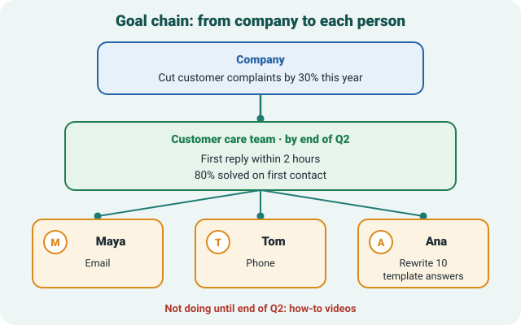

K2 · Speaking and writing clearly › Level 5 Leading
Make goals clear so the whole team understands and acts
This lesson completes Sheet 2: One-page team goal. Print template. Writing short, with data, was covered in Persuade without authority (N4).
1. Objectives
- Write a one-page team goal: why, 2–3 measurable results, what not to do, each person's part.
- Check the team has understood by asking 2 people to restate it in their own words.
2. Retrieval warm-up
- What are the three columns of the role-shift sheet?
- What are the three all-round feedback questions?
3. Explanation
A hard-working team can still head in the wrong direction. Usually it is because each person understands the goal differently. A manager's job is to state the goal clearly enough that everyone can choose the right work alone.
A one-page team goal has five parts.
- Why: which organisational goal the team goal serves. One or two sentences, with the current figure.
- Results to reach: 2–3 measurable results with deadlines. More than that, and the team forgets and spreads itself thin.
- Not doing: work the team will pause or decline in order to focus.
- Each person's part: which result each person contributes to.
- Tracking: where to see the figures, and when.

How to say it so the team remembers. Say "why" first, then "what". Use the same short sentence everywhere: meetings, the noticeboard, the team chat. Repeat it regularly, because saying it once is not enough.
Check understanding. Do not ask "Is that clear?" It almost always gets "Yes". Ask two people to restate it in their own words: "This month, what will you prioritise? Why?"
Sheet 2. One-page team goal
- WhyLinked to the organisation's goal, with the current figure.
- 2–3 resultsMeasurable, with deadlines.
- Not doingWork paused in order to focus.
- Each person's partWho contributes to which result.
- TrackingWhere the figures are, when to look.
If people restate it wrongly, that is a signal for you. Change how you say it. Do not blame the listener.
4. Workplace example
Hypothetical scenario. Alex leads a customer care team of 5 at an online homeware retailer. The company's goal for the year: cut complaints by 30%.
Before, Alex just said: "This year we must serve customers better." Each person read it differently. Some replied fast but superficially. Some replied carefully but left customers waiting all day.
He writes Sheet 2. Why: customers wait 9 hours on average for a first reply, and many complaints come from long waits. Results: first reply within 2 hours, 80% resolved on first contact, by the end of Q2. Not doing: pause making how-to videos until the end of Q2. Each person: Maya handles email, Tom handles the phone, Ana rewrites 10 template answers.
At the end of the meeting, he asks Tom: "What will you prioritise this week?" Tom says: "Answering calls quickly." Alex adds: answering fast is half of it. The other half is solving the issue during that first call.
Why this works: the goal has numbers, a deadline and a "not doing" list. He checks understanding with an open question and fixes the gap at once.
5. Practice
Hypothetical scenario. You are shift supervisor at a hotpot restaurant, managing 8 waiting staff. The restaurant manager wants more repeat customers. Right now, customers often complain about waiting to order at peak times.
Write Sheet 2 for your shift. Write one question to check that staff have understood.
Hint 1
"Better service" cannot be measured. What would you measure at peak times? The time from sitting down to ordering?
Hint 2
"Not doing" could be a side task during peak hours, moved to a quiet time.
Model answer
- Why: the restaurant wants more repeat customers. The top complaint is waiting to order between 18:00 and 20:00.
- Results: orders taken within 5 minutes of sitting down; fewer than 3 complaints about waiting each week; by the end of January.
- Not doing: no cleaning the storeroom or folding napkins between 18:00 and 20:00; do these before 17:00.
- Each person: each person covers a section of 5 tables; one person moves to help the busiest section.
- Tracking: note the seating time and ordering time on the order slip; review every Monday evening.
- Check question: "At 19:00, a new table sits down while you're folding napkins. What do you do first?"
(The figures are hypothetical.)
6. Self-check
Choose an answer. Every option has an explanation.
Question 1. Which result belongs in a one-page team goal?
-
Not quite. Nobody knows how much more professional. The team cannot check itself.
-
Correct. Correct. It has the current figure, the target and a deadline. Everyone knows where the team stands.
-
Not quite. With nine results the team forgets and spreads itself thin. Choose the 2–3 that matter most.
Question 2. Why does Sheet 2 have a "Not doing" part?
-
Not quite. It names a few specific tasks to pause. It is not a reason to refuse everything.
-
Correct. Correct. Naming what not to do helps the team choose well when time is short.
-
Not quite. The aim is focus, not reporting less work.
Question 3. What is the best way to check that the team has understood the goal?
-
Not quite. This almost always gets "Yes", even when people have not understood.
-
Correct. Correct. Hearing it in their words shows you any misunderstanding at once.
-
Not quite. Sending a file does not tell you how well people understood it.
Question 4. Two people restate the goal wrongly in the same way. What should you think first?
-
Not quite. When several people misunderstand in the same way, the cause is usually how it was said.
-
Correct. Correct. Misunderstanding is a signal to improve how you communicate, not to blame listeners.
-
Not quite. A misunderstanding does not mean the goal is wrong. Clarify it before you change it.
7. Reflection
- If you asked two random team members "What is our team's goal?", what would they say?
- What should your team pause so it can focus more?
8. Real-world application
In the next 7 days, complete Sheet 2 and present it at a team meeting. At the end, ask two people to restate their priorities. Note where they understood it differently from you.
9. Metadata
| skill | K2 · Speaking and writing clearly |
|---|---|
| level | Level 5 · Leading |
| group | N5 |
| framework_map | WEF: Leadership and social influence; SkillsFuture CCS: Communication; Influence; NACE: Communication; Leadership; CSfW: 2a Communicate for work (reference only) |
| original | Vietnamese version |
| updated | 2026-11-14 |
Finish the lesson
Mark it as done and the site suggests reviews after 1, 3 and 7 days. The data stays on your device only.
Suggested reviews: